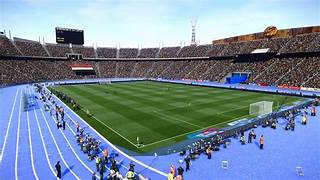
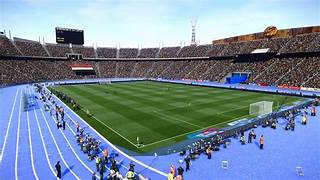
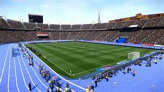
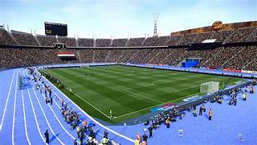

Paris 2024 Olympics


 



The Paris 2024 Olympics will be a monumental event, bringing together athletes from around the world to compete in the spirit of excellence, respect, and friendship. As the host city, Paris is set to deliver a breathtaking spectacle that celebrates not only athletic prowess but also the rich culture and history of France.
A Brief History of the Olympics:
The Olympic Games have ancient roots, originating in Greece over 2,700 years ago. The modern Olympics, revived in 1896, have since become the world's foremost sports competition, featuring athletes from nearly every country. The Paris 2024 Games will mark the third time Paris has hosted the Summer Olympics, with previous editions held in 1900 and 1924.
The Olympics have evolved significantly over the years, but the core values of unity, diversity, and peace have remained unchanged. Athletes compete not just for medals, but to inspire generations, promote global harmony, and showcase the pinnacle of human physical achievement.
Highlights of Paris 2024:
* **Iconic Venues:** Competitions will take place in historic and picturesque locations, including the Champs-Élysées, the Seine River, and the Stade de France.
* **New Sports:** Paris 2024 will introduce several new sports, including surfing, skateboarding, and sport climbing, adding to the excitement and diversity of the Games.
* **Sustainability:** The Games are committed to being the most sustainable Olympics ever, with eco-friendly initiatives and a focus on reducing the environmental impact.
The Paris 2024 Olympics will be a celebration of human spirit and athletic achievement, uniting people from all corners of the globe. Whether you're a sports enthusiast, a culture lover, or simply someone who enjoys grand spectacles, the Paris 2024 Games promise to be an unforgettable experience.